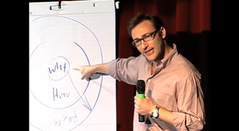

Quien comparta tu “por qué”, es tuyo
El 2021 toca a su fin. El año pasado escribí un artículo en el que resumía mis últimos años laborales. Y me gustó publicarlo, sobre todo me gustó despertar en vosotros reacciones y comentarios. Pues este año, no se si por alimentar el ego, mantener viva mi red, o simplemente porque me apetece, he decidido volver a escribir. Y en la misma línea que la última vez, haciendo balance y alguna declaración de intenciones.

Hacer balance implica reflexionar acerca del año, y sorprendentemente sirve para darte cuenta de todo lo que hemos hecho. Que no es poco. En este punto ya habrás perdido el interés por este artículo o estarás a punto (yo lo haría). Así que voy a cambiar el enfoque. ¿Qué te aporta a ti saber que este año he sido capaz de encontrar un fuero que gobernar en mi trabajo, que he desarrollado un e-commerce desde cero con MERN en mis ratos libres, que he aprendido a hacer ingestas de datos con jobs de Spark, IntelliJ y Jupyter Notebook (lo de los notebooks y los .map() .reduce() que os decía el año pasado), que estoy haciendo un máster en e-commerce por diversión y que estoy actualizandome sobre patrones de arquitectura de microservicios (Event Driven, SAGA, Strangler, etc), llegando a programarlos y desplegarlos en contenedores?. Nada, diría yo. Pero por el camino me he reencontrado con algo que sí que creo te aportará: el “Golden Circle” de Simon Sinek.

Muchos (sino todos) habréis visto la Ted Talk de “Start with why”. Yo mismo la había visto hace unos años. Pero ha sido este año cuando me he dado cuenta de lo potente del mensaje. Todos sabréis explicar (mejor o peor) qué hace vuestra empresa o la empresa en la que trabajáis. Unos pocos sabréis explicar cómo lo hace, pero muy pocos sabréis decir por qué lo hace. Y este es el círculo dorado de Sinek, una diana donde el centro es el “why”, rodeado por otro círculo que es el “how”, a su vez está rodeado por un tercer círculo que es el “what”.

Why, how, what. Por qué, cómo, qué. Sinek nos revela que para comunicar de manera efectiva, has de empezar de dentro a fuera de la diana. Hasta aquí diréis, ¡vaya novedad!. Pues efectivamente, nada nuevo. Pero trata de llevar este círculo dorado a vosotros mismos… Trata de pasar de:
- ¿A qué me dedico en -pon aquí el nombre de tu empresa- ?
- ¿Cómo sé hacer eso?
- ¿Qué estudié? etc
- ¿Por qué trabajo en -pon aquí el nombre de tu empresa-?
- ¿Por qué sé hacer eso?
- ¿Por qué estudié? etc

Cuando hables de ti, empieza por el por qué. Verás la diferencia. Para muestra un botón:
- Soy informático, me dedico a hacer programas que ayudan a las empresas a eficientar sus procesos.
- Siempre pensé que la tecnología era la manera de cambiar el mundo. Por eso soy informático y he empezado ayudando a las empresas con mis programas.
Eso es todo amigo.
¿Qué piensas sobre todo esto? Aprovecho esta oportunidad para desearte una feliz Navidad y un 2022 cargado de respuestas a tus “por qué”.